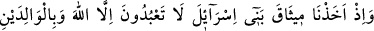
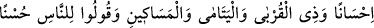
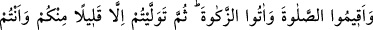
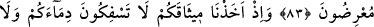
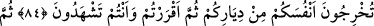
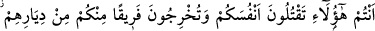
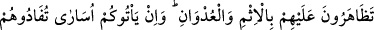
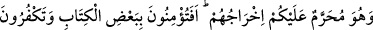
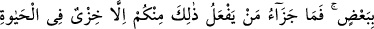
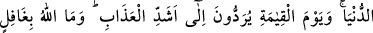
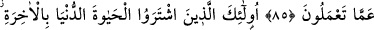
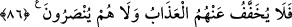
DÜNYA HAYATINI
SATIN ALANLAR
83. Vaktiyle biz, İsrâîloğulları’ndan: Yalnızca Allah’a kulluk edeceksiniz, ana-
babaya, yakın akrabaya, yetîmlere, yoksullara iyilik edeceksiniz diye söz almış ve
“İnsanlara güzel söz söyleyin, namazı kılın, zekâtı verin” diye de emretmiştik.
Sonunda azınız müstesnâ, yüz çevirerek dönüp gittiniz.
84. (Ey İsrâîloğulları!) Birbirinizin kanını dökmeyeceğinize, birbirinizi
yurtlarınızdan çıkarmayacağınıza dâir sizden söz almıştık. Her şeyi görerek
sonunda bunları kabûl etmiştiniz.
85. Bu misakı kabûl eden sizler, (verdiğiniz sözün tersine) birbirinizi öldürüyor,
aranızdan bir zümreyi yurtlarından çıkarıyor, kötülük ve düşmanlıkta onlara karşı
birleşiyorsunuz. Onları yurtlarından çıkarmak size haram olduğu halde (hem
çıkarıyor hem de) size esîrler olarak geldiklerinde fidye verip onları
kurtarıyorsunuz. Yoksa siz Kitâb’ın bir kısmına inanıp bir kısmını inkâr mı
ediyorsunuz? Sizden öyle davrananların cezâsı dünyâ hayatında ancak rüsvaylık;
kıyâmet gününde ise en şiddetli azâba itilmektir. Allah sizin yapmakta
olduklarınızdan asla gâfil değildir.
86. İşte onlar, âhırete karşılık dünyâ hayatını satın alan kimselerdir. Bu yüzden